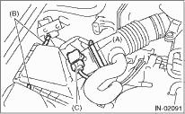
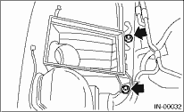

1. Disconnect the ground cable from the battery.

2. Loosen the clamps (A) which connect the air cleaner case and the intake duct.
3. Remove clip (B) from the air cleaner case.
4. Disconnect connector (C) from the mass air flow & intake air temperature sensor.

5. Remove the intake duct and upper cover from air cleaner case.
6. Remove the air cleaner element.
7. Remove the bolts which install air cleaner case to vehicle body.

8. Remove the air cleaner case.